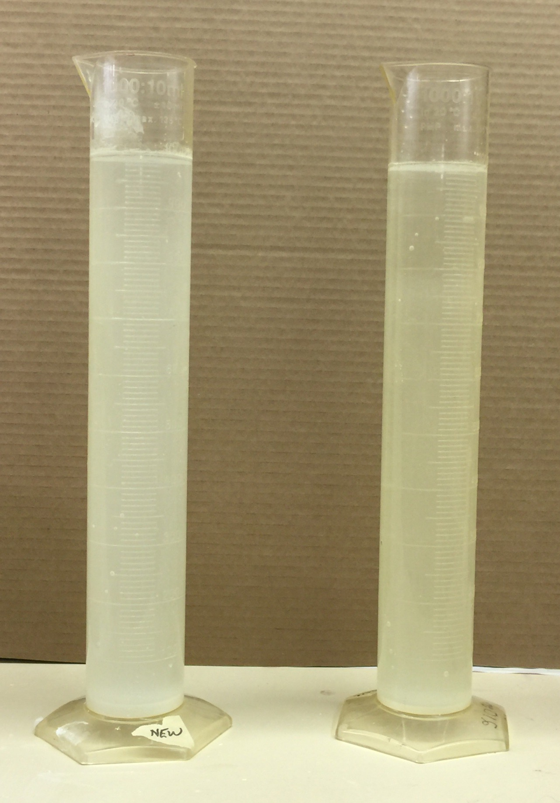
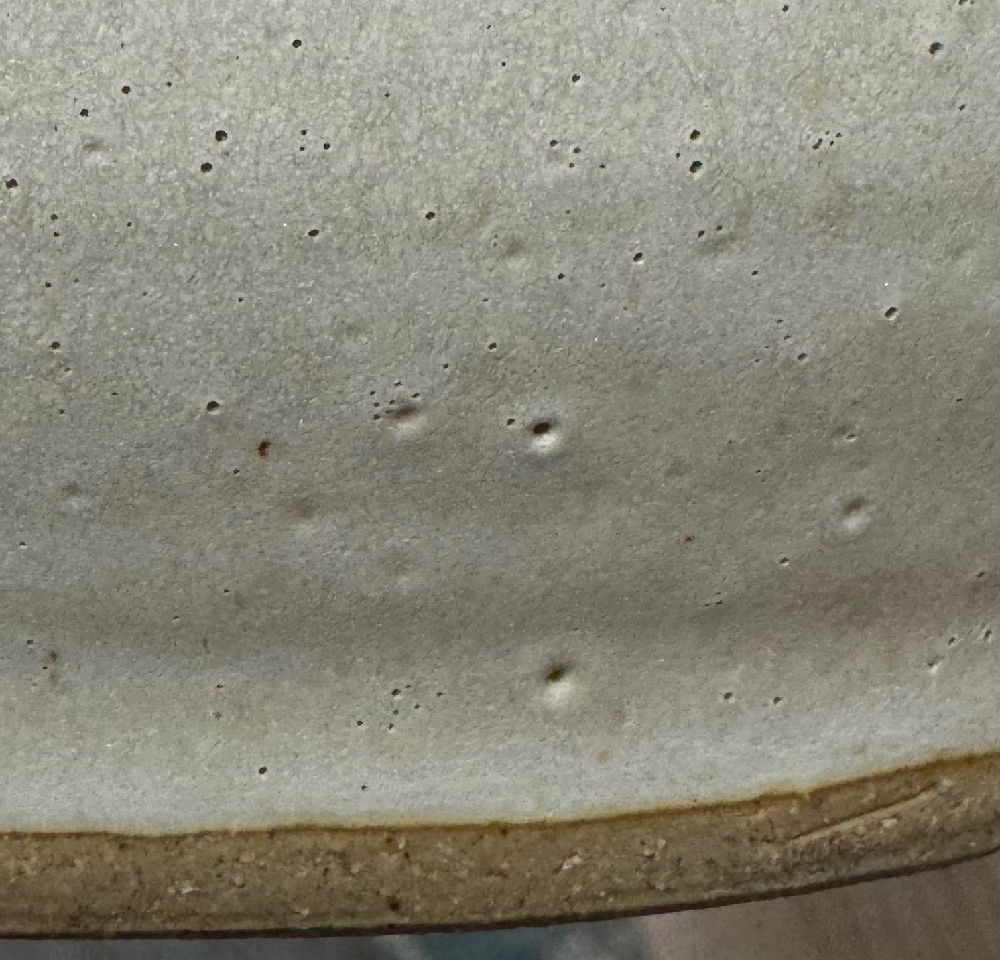

Barium Carbonate in Glazes
Raw barium carbonate powder is well known as a poisonous substance. It is used to supply BaO to glazes. The extent to which these might leach the BaO into food or drink depends on the chemical balance of the glaze, that is, the degree to which it locks the BaO molecules into the glass structure. The likelihood of BaO ions being released into food or drink is smallest if the glaze is balanced (e.g. well melted and having adequate silica and alumina) and the percentage of BaO is low. That being said, low percentages are likely candidates for substitution with other fluxing oxides without significantly affecting physical properties or appearance of the glaze. Barium crystal matte surfaces almost always employ high percentages of BaO, and most often have a character that cannot be duplicated with other oxides. There are many BaO frits intended for the production of matte glazes, these can be advantageous because they are safer to handle as powders and enable the use of a lower percentage of BaO. The presence of BaO is key to the development of barium blue.
It is possible to achieve barium-unique effects and still have a glaze that has low solubility. However, such glazes should not be used on food surfaces without additional leach testing on over and underfired ware (to allow for possible variation in production firing). And leach testing should be routine where the chemical balance is fragile (small variations in materials disproportionately affect appearance and thus could affect solubility rates).
Barium is considered dangerous when swallowed; however, it is much less toxic as dust or in skin contact. The author has worked in a local ceramic industry that has routinely used barium carbonate in tile, brick and pottery bodies for 50 years. The silicosis threat from quartz in the clay has always completely overshadowed toxicity ingestion or inhalation issues surrounding barium. Here is another interesting comment we received: "The EPA in the US allows up to 2 mg per liter of drinking water, and that's far below the lowest level at which anyone has actually observed toxicity. I think the lowest acute dose that can sometimes result in death is about 800 mg, and at that level it can be treated by administration of potassium to counteract the muscular effects of hypokalemia."
| By Tony Hansen Follow me on        |  |
Related Information
Barium testing

This picture has its own page with more detail, click here to see it.
Original File: CSIMG_17_1.jpg
Example of the blisters from Barium Carbonate decomposition

This picture has its own page with more detail, click here to see it.
This is a combination dolomite/barium matte. It has been fired at cone 10 reduction. It contains 17% barium carbonate and 17% dolomite (in a nepheline syenite base). Most carbonates decompose and gas off the CO2 well before the glaze melts, but not barium carbonate. It can turn the glaze matrix into an "aero chocolate bar" of bubbles. The glaze melt viscosity of some glazes, like this one, makes them vulnerable to preserving the bubbles as dimples or sharp-edged holes.
Links
| Materials |
Barium Carbonate
A pure source of BaO for ceramic glazes. This is 77% BaO and has an LOI of 23% (lost at CO2 on firing). |
| Materials |
Ferro Frit 3247
|
| Materials |
Pemco Frit P-626
|
| Materials |
Ferro Frit FB-284-M
|
| Materials |
Fusion Frit F-403
For ceramic glazes this is a higher quality and safer source of BaO than barium carbonate. It contains 35% BaO. |
| Materials |
Ferro Frit 938
|
| Materials |
Ferro Frit 3289
|
| Materials |
Barium Nitrate
|
| Materials |
General Frit GF-129
|
| Materials |
Fusion Frit F-65
|
| Materials |
Ferro Frit CC-257
|
| Materials |
Ferro Frit 3831
|
| Materials |
Barium Sulfate
|
| URLs |
http://www.ilo.org/public/english/protection/safework/cis/products/icsc/dtasht/_icsc07/icsc0777.htm
Barium Carbonate Hazards at ilo.org |
| Hazards |
BARIUM and COMPOUNDS Toxicology
|
| Hazards |
Barium Carbonate in Clay Bodies
Considerations regarding the use of barium carbonate in pottery and structural clay bodies for precipitation of soluble salts. |
 PayPal | No tracking, No ads, No paywall, No transient content! Just organized, concise information constantly updated and improved. Was this helpful? Consider supporting me. |
Got a Question?
Buy me a coffee and we can talk 

https://digitalfire.com, All Rights Reserved
Privacy Policy